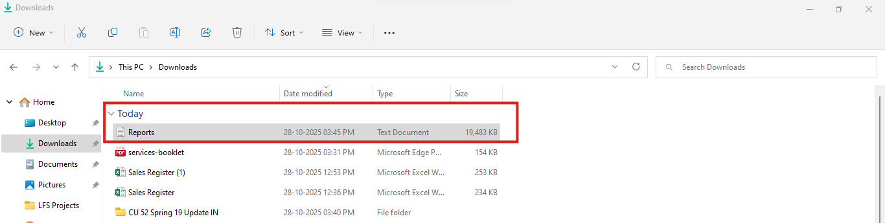
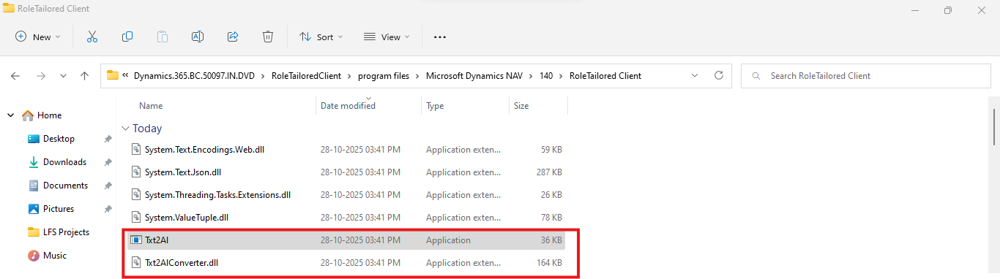
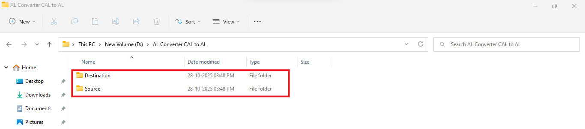
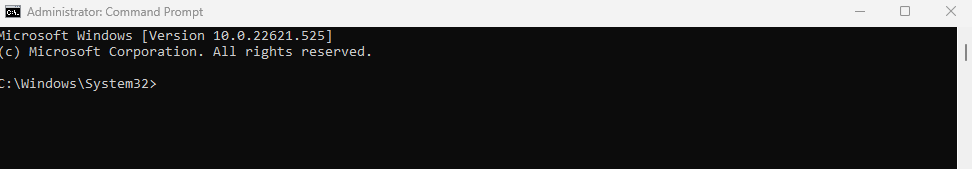
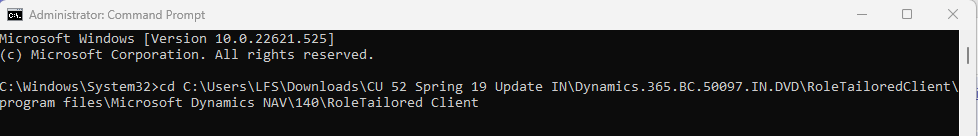
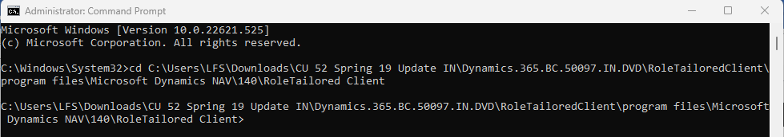
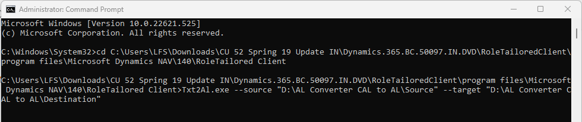
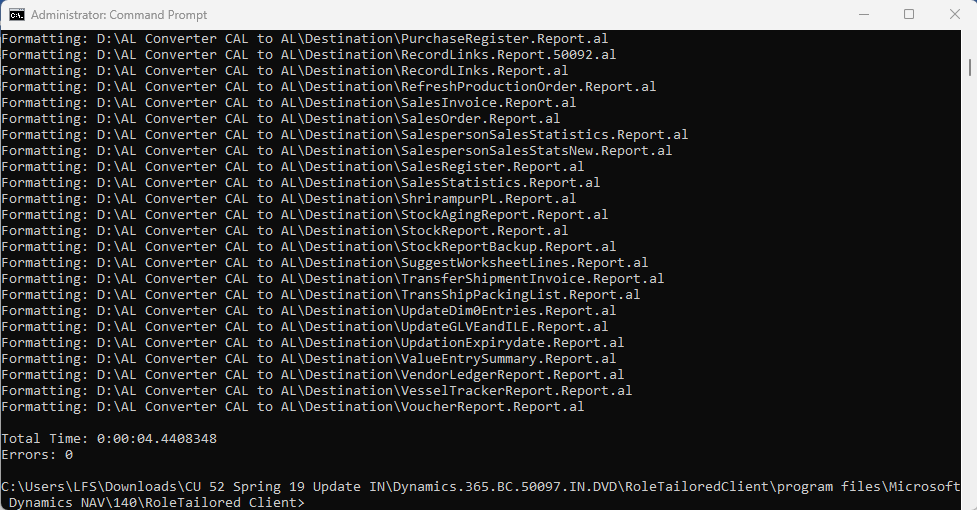

Migrating from C/AL to AL Using Txt2AL — Complete Guide for Dynamics NAV & Business Central Developers
As Microsoft Dynamics 365 Business Central moved from the old C/SIDE development environment to the AL language and Visual Studio Code, developers needed a bridge to bring forward their existing C/AL customizations.
That’s where Txt2AL comes in.
🚀 What Is Txt2AL?
Txt2AL is Microsoft’s official conversion tool that transforms classic Dynamics NAV C/AL objects (in .txt format) into modern AL files used by Business Central extensions.
It’s a command-line utility (txt2al.exe) included in the RoleTailored Client (RTC) for Business Central 2019 Spring Release / Version 14 — the last release that still supported both C/AL and AL development.
Essentially, it allows developers to take their exported .txt objects and generate .al files that can be compiled, customized, and published as modern extensions inside Business Central.
💡 Why You Need Txt2AL
When you’re upgrading or refactoring an existing NAV solution for Business Central, you’ll likely have hundreds of customized C/AL objects. Rewriting all of them manually into AL would be a nightmare.
Txt2AL automates most of this process by:
- Converting tables, pages, reports, and codeunits from .txt (C/AL) to .al (AL)
- Generating extension-ready objects with updated syntax
- Providing starting points for manual refactoring
However, it’s not a magic wand — the conversion is about 80–90% automated. You’ll still need to review and refactor certain constructs (like RDLC reports, menus, and event patterns).
⚙️ Before You Begin: Prerequisites
- Export C/AL Objects
Open the NAV/BC Development Environment and export the objects you want to convert as .txt files.
(File → Export → Save as Text Format)

- Locate Txt2AL.exe
The tool is included with the RoleTailored Client. A typical path looks like this: C:\Program Files (x86)\Microsoft Dynamics NAV\140\RoleTailored Client\Txt2Al.exe
In your case, it may be part of the BC14 installation DVD:
C:\Users\Admin\Downloads\CU 52 Spring 19 Update IN\Dynamics.365.BC.50097.IN.DVD\RoleTailoredClient\program files\Microsoft Dynamics NAV\140\RoleTailored Client

- Prepare Folders
- Source → contains exported .txt files
- Destination → empty folder where .al files will be generated

- Run CMD as Administrator
Txt2AL must be executed with admin rights for full access.

🧭 Step-by-Step: How to Use Txt2AL
Step 1: Open Command Prompt
Run Command Prompt as Administrator and navigate to the folder where Txt2AL.exe is located:
cd "C:\Users\Admin\Downloads\CU 52 Spring 19 Update IN\Dynamics.365.BC.50097.IN.DVD\RoleTailoredClient\program files\Microsoft Dynamics NAV\140\RoleTailored Client"


Step 2: Execute the Txt2AL Command
Txt2Al.exe --source "C:\Users\Admin\OneDrive\Documents\AL Converter CAL to AL\Source" ^
--target "C:\Users\Admin\OneDrive\Documents\AL Converter CAL to AL\Destination" ^
--extensionStartId 50000 –rename

Explanation of parameters:
- --source → Folder containing your exported .txt C/AL objects
- --target → Folder where the converted .al files will be created
- --extensionStartId → Starting object ID for the converted AL objects (use your custom range, e.g. 50000)
- --rename → Optional flag that renames objects to AL-friendly names automatically
Tip: Always quote your folder paths if they include spaces.
Step 3: Review and Fix the Output
Once the process completes, open your Destination folder. You’ll see .al files created for each object.
Now, open these files in Visual Studio Code (with the AL Language extension) and:
- Fix any compile-time errors
- Replace obsolete syntax or references
- Refactor business logic into event subscribers
- Validate reports and page extensions
This is your new AL project workspace.

Common Txt2AL Options
Option | Description |
--source | Path of source folder with .txt files |
--target | Path of destination folder for AL output |
--extensionStartId | Starting ID for AL objects |
--rename | Renames objects to valid AL identifiers |
--type | Convert specific object types only (e.g., --type Table) |
--help | Shows all available options |
You can view all options anytime by running:
Txt2Al.exe --help
⚠️ Common Pitfalls and Tips
- Expect Manual Cleanup: Not every C/AL construct has a direct AL equivalent (especially in reports or menus).
- Run in CMD (not PowerShell): Some flags behave differently in PowerShell.
- Use BC14 Tooling: Txt2AL exists only in BC14. Even if your target is BC23+, always convert using BC14’s tool.
- Choose Correct ID Range: Avoid conflicts with Microsoft or ISV objects by setting a unique ExtensionStartId.
- Backup Everything: Always keep your original .txt exports safe before conversion.
📘 Example Workflow Summary
- Export NAV objects to .txt
- Create Source and Destination folders
- Run Txt2AL.exe with the right parameters
- Review generated .al files in VS Code
- Clean up and test your extension
🔗 Further Resources
- Microsoft Docs — The Txt2AL Conversion Tool
- Microsoft Docs — Converting from C/AL to AL
- Microsoft Community Forums
🏁 Final Thoughts
Txt2AL is your first step in modernizing a legacy NAV solution.
While it won’t deliver a ready-to-publish extension, it gives you a massive head start — converting syntax, structures, and metadata into AL format so you can focus on functional logic and modernization.
If you’re planning an upgrade or conversion project, mastering Txt2AL is an essential skill that bridges the gap between C/AL’s past and AL’s future.